- Generated on Sun Oct 11 2026 15:00:24 for Cwhip Programming Language by
 1.9.8
1.9.8
|
Cwhip Programming Language
|
Namespaces | |
| namespace | anonymous_namespace{Ast.cpp} |
| namespace | anonymous_namespace{CodeGenerator.cpp} |
| namespace | anonymous_namespace{CodeGeneratorCallbacks.cpp} |
| namespace | anonymous_namespace{CodeGeneratorModule.cpp} |
| namespace | anonymous_namespace{CodeGeneratorPrint.cpp} |
| namespace | anonymous_namespace{CommandLine.cpp} |
| namespace | anonymous_namespace{Lexer.cpp} |
| namespace | anonymous_namespace{ModuleRegistry.cpp} |
| namespace | anonymous_namespace{PackageIntegrity.cpp} |
| namespace | anonymous_namespace{PackageRegistry.cpp} |
| namespace | anonymous_namespace{ParserClass.cpp} |
| namespace | anonymous_namespace{PathResolution.cpp} |
| namespace | anonymous_namespace{SemanticAnalyzer.cpp} |
| namespace | anonymous_namespace{SemanticExpressions.cpp} |
Functions | |
| std::unique_ptr< Expression > | cloneExpression (const Expression &expression) |
| ClassDeclaration | makeBuiltinExceptionClass () |
| void | dumpAst (const Program &program, std::ostream &output) |
| std::string | formatDiagnostic (const SourceLocation &location, const std::string &message) |
| const char * | tokenTypeName (TokenType type) noexcept |
| ModuleLoadResult | loadImportedModules (Program &program, const ModuleLoadOptions &options) |
| std::string | packageFileSha256 (const std::filesystem::path &path) |
| std::string | packageTreeSha256 (const std::filesystem::path &root) |
| std::optional< ModuleVersionPolicy > | readModuleVersionPolicy (const std::filesystem::path &path) |
| PackageResolution | resolvePackages (const std::vector< std::string > &rootNames, const std::vector< std::filesystem::path > &searchRoots, const std::optional< ModuleVersionPolicy > &policy) |
| InstallLayout | configuredInstallLayout () |
| std::optional< std::string > | processEnvironment (const std::string &name) |
| std::optional< std::filesystem::path > | currentExecutablePath (const std::string &argv0) |
| std::filesystem::path | installPrefixForExecutable (const std::filesystem::path &executable, const InstallLayout &layout) |
| ResourcePaths | resolveResourcePaths (const std::optional< std::filesystem::path > &executable, const InstallLayout &layout, const EnvironmentLookup &environment) |
| const ResourcePaths & | processResourcePaths () |
| ModuleSearchPaths | resolveModuleSearchPaths (const ModuleSearchRequest &request, const ResourcePaths &resources, const EnvironmentLookup &environment) |
| void | validateModuleSearchPaths (const ModuleSearchPaths &paths) |
| std::vector< Token > | tokenizeWithIncludes (const std::string &source, const std::filesystem::path &sourcePath, std::unordered_set< std::string > &includedFiles, std::size_t depth, bool root, std::size_t maximumIncludeDepth, std::vector< std::filesystem::path > includeChain, std::vector< std::filesystem::path > includeSearchPaths) |
| std::unique_ptr< Expression > cwhip::cloneExpression | ( | const Expression & | expression | ) |
Definition at line 12 of file Ast.cpp.
References cloneExpression().
Referenced by cloneExpression().
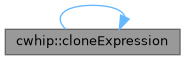
| InstallLayout cwhip::configuredInstallLayout | ( | ) |
Definition at line 121 of file PathResolution.cpp.
Referenced by main(), and processResourcePaths().
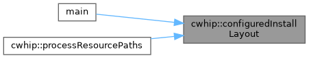
| std::optional< std::filesystem::path > cwhip::currentExecutablePath | ( | const std::string & | argv0 | ) |
Definition at line 132 of file PathResolution.cpp.
References processEnvironment().
Referenced by main(), and processResourcePaths().
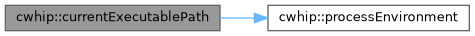
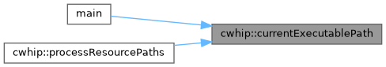
| void cwhip::dumpAst | ( | const Program & | program, |
| std::ostream & | output | ||
| ) |
Definition at line 207 of file Ast.cpp.
Referenced by main().
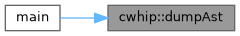
| std::string cwhip::formatDiagnostic | ( | const SourceLocation & | location, |
| const std::string & | message | ||
| ) |
Definition at line 12 of file Diagnostic.cpp.
| std::filesystem::path cwhip::installPrefixForExecutable | ( | const std::filesystem::path & | executable, |
| const InstallLayout & | layout | ||
| ) |
Definition at line 150 of file PathResolution.cpp.
Referenced by resolveResourcePaths().
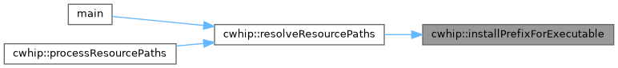
| ModuleLoadResult cwhip::loadImportedModules | ( | Program & | program, |
| const ModuleLoadOptions & | options | ||
| ) |
Definition at line 56 of file ModuleRegistry.cpp.
References readModuleVersionPolicy(), resolvePackages(), and tokenizeWithIncludes().
Referenced by main().
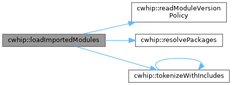
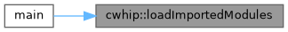
| ClassDeclaration cwhip::makeBuiltinExceptionClass | ( | ) |
Definition at line 35 of file Ast.cpp.
| std::string cwhip::packageFileSha256 | ( | const std::filesystem::path & | path | ) |
Definition at line 115 of file PackageIntegrity.cpp.
Referenced by cwhip::anonymous_namespace{PackageRegistry.cpp}::readLockedPolicy().
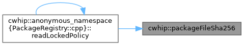
| std::string cwhip::packageTreeSha256 | ( | const std::filesystem::path & | root | ) |
Definition at line 121 of file PackageIntegrity.cpp.
Referenced by cwhip::anonymous_namespace{PackageRegistry.cpp}::Resolver::select().
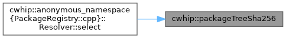
| std::optional< std::string > cwhip::processEnvironment | ( | const std::string & | name | ) |
Definition at line 126 of file PathResolution.cpp.
Referenced by anonymous_namespace{main.cpp}::compilerExecutable(), currentExecutablePath(), main(), and processResourcePaths().
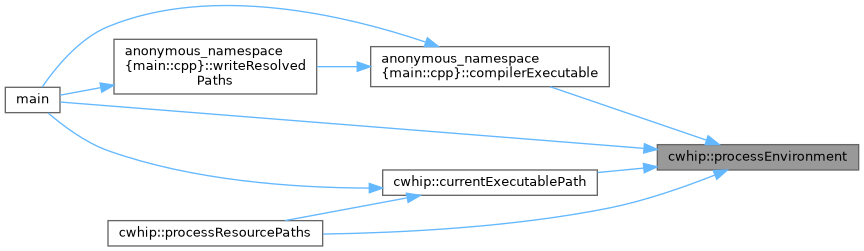
| const ResourcePaths & cwhip::processResourcePaths | ( | ) |
Definition at line 203 of file PathResolution.cpp.
References configuredInstallLayout(), currentExecutablePath(), processEnvironment(), and resolveResourcePaths().
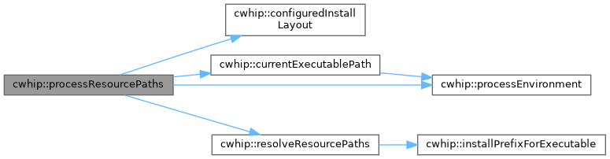
| std::optional< ModuleVersionPolicy > cwhip::readModuleVersionPolicy | ( | const std::filesystem::path & | path | ) |
Definition at line 919 of file PackageRegistry.cpp.
Referenced by loadImportedModules().
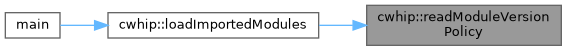
| ModuleSearchPaths cwhip::resolveModuleSearchPaths | ( | const ModuleSearchRequest & | request, |
| const ResourcePaths & | resources, | ||
| const EnvironmentLookup & | environment | ||
| ) |
Definition at line 209 of file PathResolution.cpp.
Referenced by main().
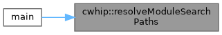
| PackageResolution cwhip::resolvePackages | ( | const std::vector< std::string > & | rootNames, |
| const std::vector< std::filesystem::path > & | searchRoots, | ||
| const std::optional< ModuleVersionPolicy > & | policy | ||
| ) |
Definition at line 941 of file PackageRegistry.cpp.
Referenced by loadImportedModules().
| ResourcePaths cwhip::resolveResourcePaths | ( | const std::optional< std::filesystem::path > & | executable, |
| const InstallLayout & | layout, | ||
| const EnvironmentLookup & | environment | ||
| ) |
Definition at line 170 of file PathResolution.cpp.
References installPrefixForExecutable().
Referenced by main(), and processResourcePaths().
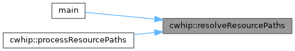
| std::vector< Token > cwhip::tokenizeWithIncludes | ( | const std::string & | source, |
| const std::filesystem::path & | sourcePath, | ||
| std::unordered_set< std::string > & | includedFiles, | ||
| std::size_t | depth, | ||
| bool | root, | ||
| std::size_t | maximumIncludeDepth, | ||
| std::vector< std::filesystem::path > | includeChain, | ||
| std::vector< std::filesystem::path > | includeSearchPaths | ||
| ) |
Definition at line 14 of file SourceLoader.cpp.
References tokenizeWithIncludes().
Referenced by loadImportedModules(), main(), and tokenizeWithIncludes().
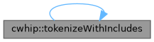
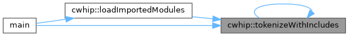
|
noexcept |
Definition at line 77 of file Lexer.cpp.
Referenced by anonymous_namespace{main.cpp}::traceTokens().
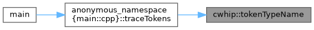
| void cwhip::validateModuleSearchPaths | ( | const ModuleSearchPaths & | paths | ) |
Definition at line 301 of file PathResolution.cpp.
Referenced by main().
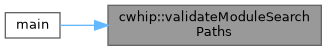